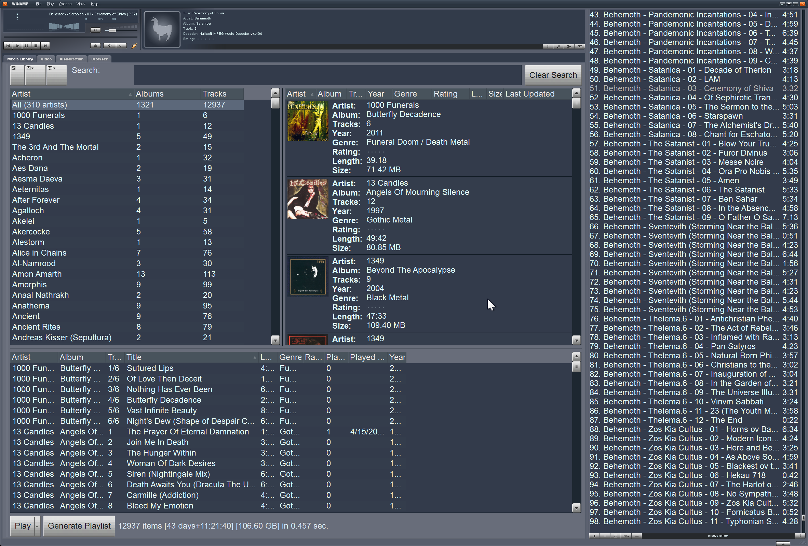
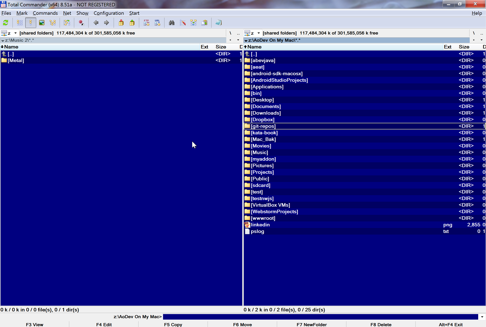
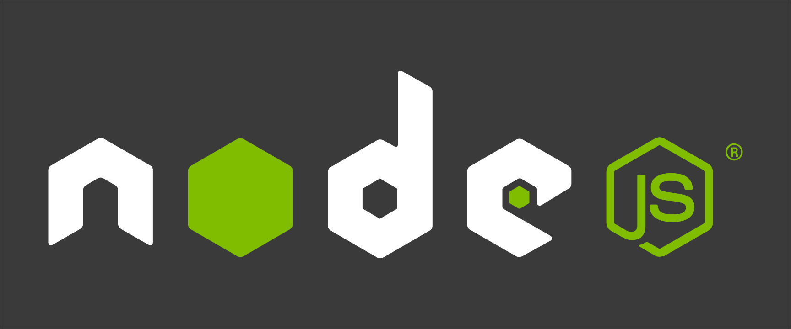
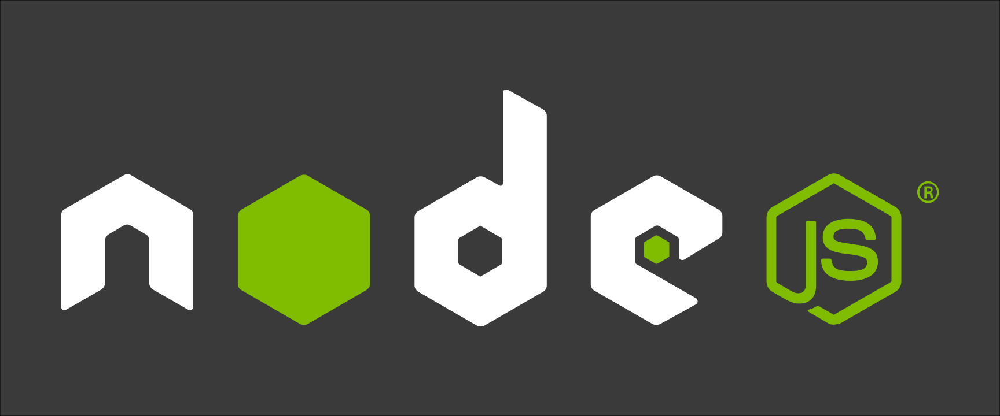

Node.js & html5 for multi-platformdesktop apps
by Kevin R. Purnelle
Why this presentation
Frustration over simple apps
 Tools

NWJS (Node-webkit before)
(Roger Wang - Intel)
Electron (Atom-shell before)
(Github)
Known apps
What they are
 +

+

Chromium + Node.js
Chromium
Base project for Google Chrome
- Open-source
Differences
-
Entry point:
index.html
main.js
- Build system (faster to build Electron)
- Node integration (nwjs patches chromium)
- Node <-> Browser communication
A matter of communication and security
Node context + Window context (browser)
Access variables from the browser or node.js "directly".
Main process + Renderer process (browser)
Inter-process communication. (IPC)
Electron IPC styles
// In renderer process (web page).
var ipc = require('ipc');
ipc.send('asynch-message', 'ping');
// With remote module
var remote = require('remote');
remote.require(moduleFromMainProcess)
// In main process.
var ipc = require('ipc');
ipc.on('asynch-message', function(event, arg) {
console.log(arg); // prints "ping"
event.sender.send('asynch-reply', 'pong');
});
Vantages and disadvantages
The good, the bad and the uglyThe good


- JS only (who said full stack JS ? :)
- Development as usual
- UI with CSS, only one browser
- Multi-platform
- Native interactions
The bad
- "Almost" multi-platform
- Some dev tools are not that "straightforward"
- "Not native"
-
Distribution is harder
But possible to use Apple app store!
The ugly
- Weight ~= 100 MB unzipped, 35 MB zipped
But, there is hope... modular Chromium
Is there a better one?
...not really
- Both have good communities
- Electron has more traction
- Docs are better for Electron
- I switched from NWJS to Electron
What I have done

Development process
Same as usual
- npm install
- code, bundle, livereload
(atom-watcher)
Problems
- Storage / Database
- Multi-platform performance
OSX vs Windows
Opportunities
- Demos
- Actual products
- Usability Testing
- Solve your frustrations (like me)
"We need you to draw seven red lines, all strictly perpendicular,
with green and transparent ink."
"The Expert" written & directed by Lauris Beinerts
Demo: package ready
in 1 minute
Example: RisingStack Trace Investigation
Prerequisites:
npm install electron-prebuilt -g
npm install electron-packager -g
- Copy Electron starter
- Generate dist, copy the file
- Edit paths
- Generate packages
Conclusion
Questions
me: Kevin Purnelle
kevin.purnelle@gmail.com
AoDev on npm and Github
RisingStack
- http://electron.atom.io/
- https://www.npmjs.com/package/atom-watcher
- http://nwjs.io/